layout: true <!--background-image: url('wallls.com-41814.jpg')--> --- class: center, middle # Pulp Fiction ### Quentin Tarantino, 1994 ??? Notes for the _first_ slide! --- Pulp /'pǝlp/ n. 1. A soft, moist, shapeless mass of matter. 2. A magazine or book containing lurid subject matter and being characteristically printed on rough, unfinished paper. .center[] <!-- background-image: url(poster.jpg) --> --- # Trailer <video width="320" height="240" controls> <source src="/home/tom/Vidéos/Pulp_fiction/trailer.mp4" type="video/mp4"> <!-- <source src="movie.ogg" type="video/ogg"> --> Your browser does not support the video tag. </video> --- # Story <center> 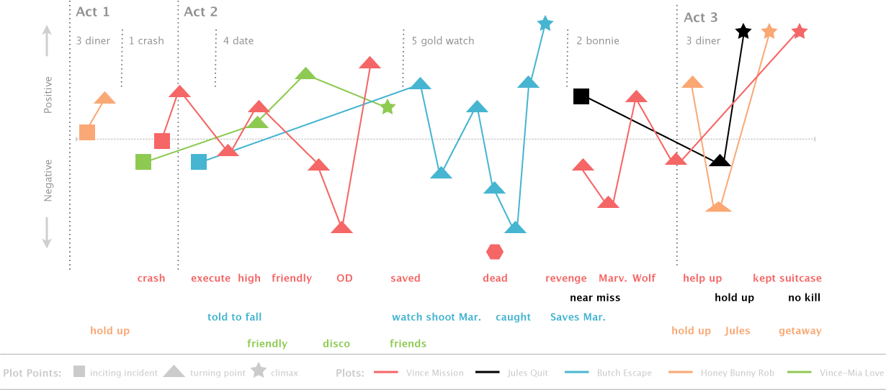</center> --- # Story <center> 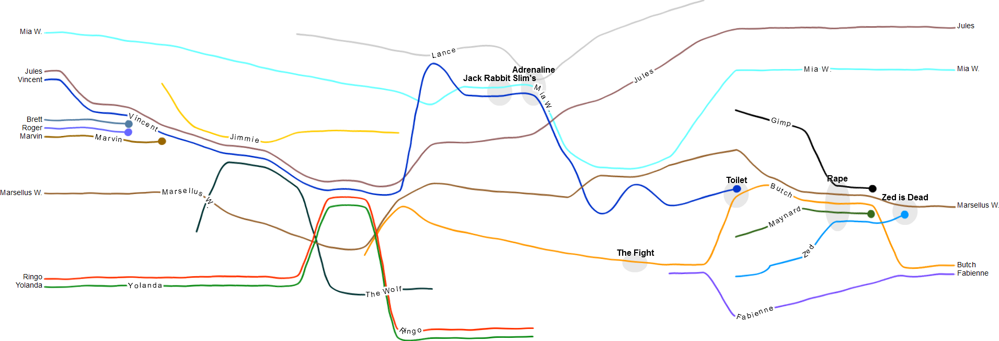</center> --- # Filmography of Quentin Tarantino <table style="width: 100%"> <tr> <td> 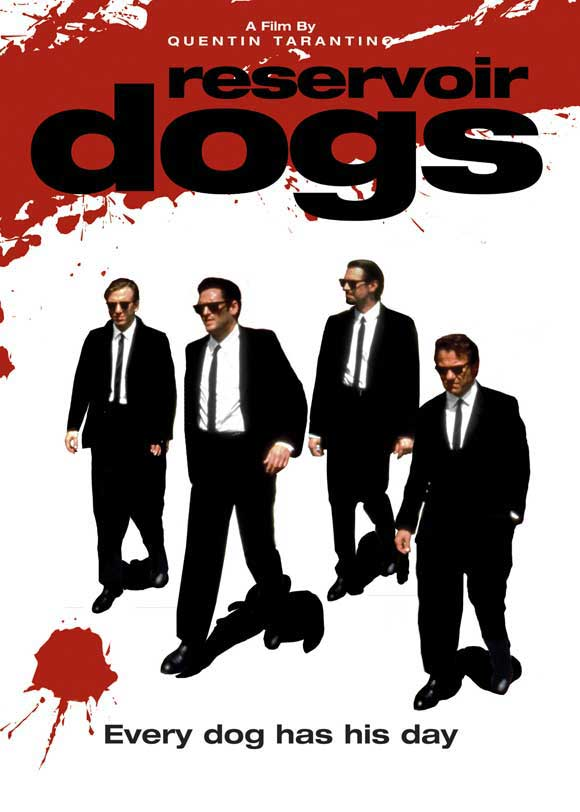 </td> <td> 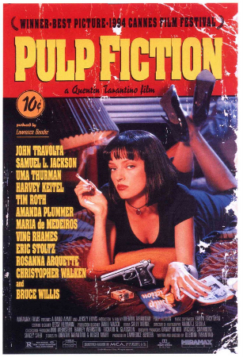 </td> <td> 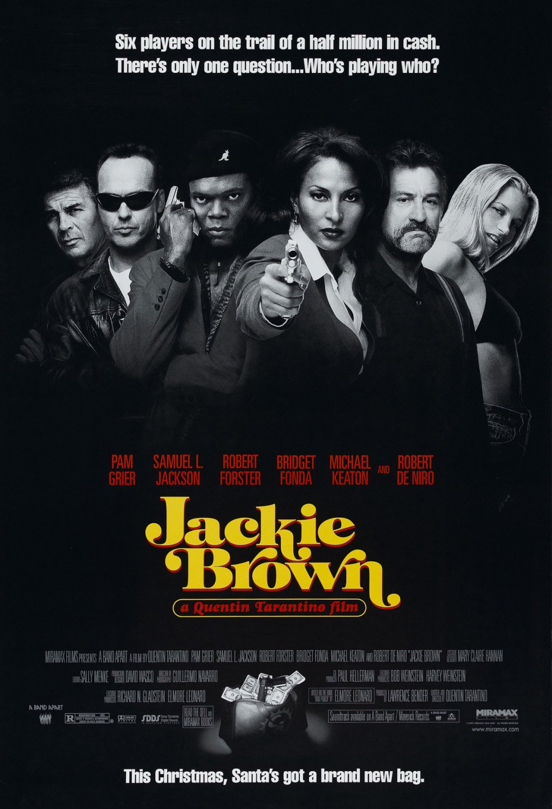 </td> <td> </td> </tr> <tr> <td> 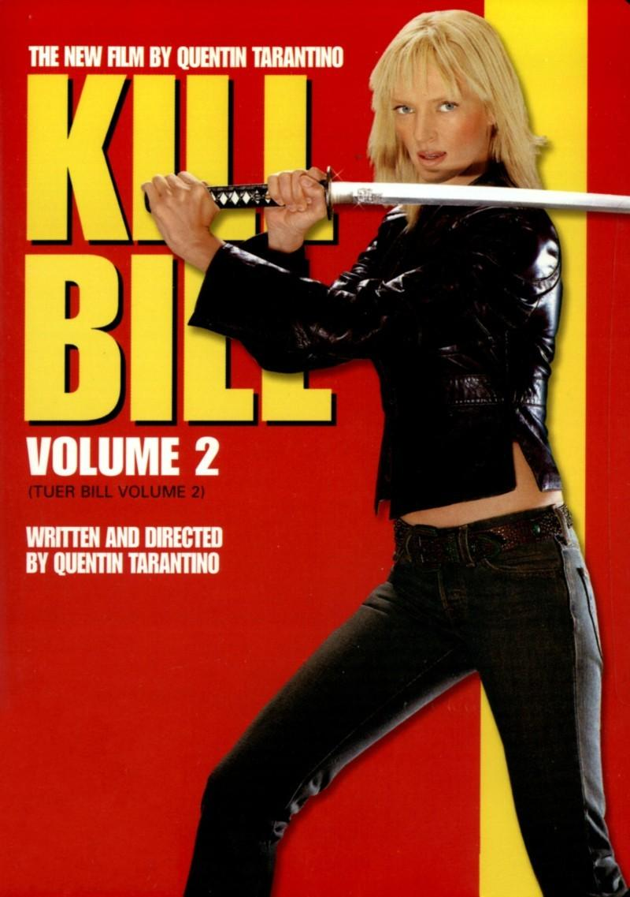 </td> <td> </td> <td> </td> <td> </td> </tr> </table> --- # Main Actors <table style="width: 100%"> <tr> <td> 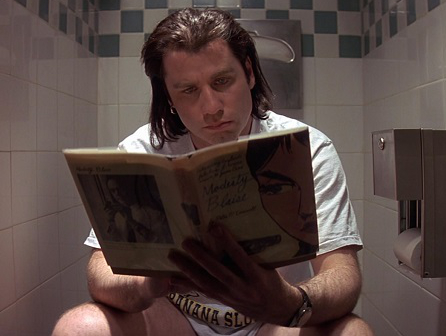 </td> <td> 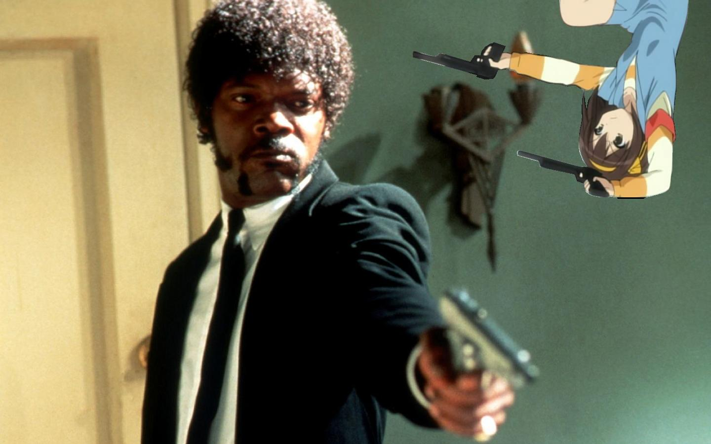 </td> <td> 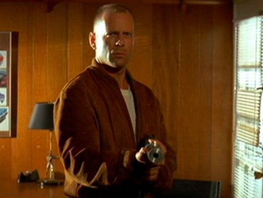 </td> </tr> <tr> <td> John Travolta </td> <td> Samuel L. Jackson </td> <td> Bruce Willis </td> </tr> <tr> <td> 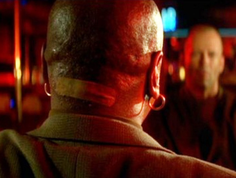 </td> <td> 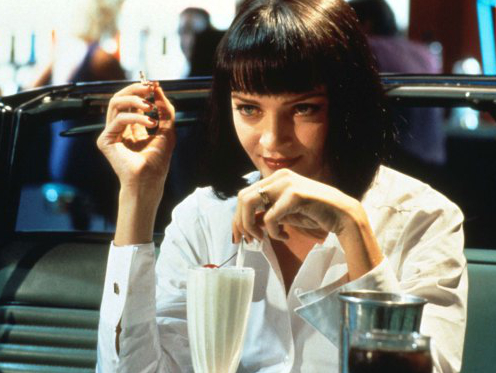 </td> <td> 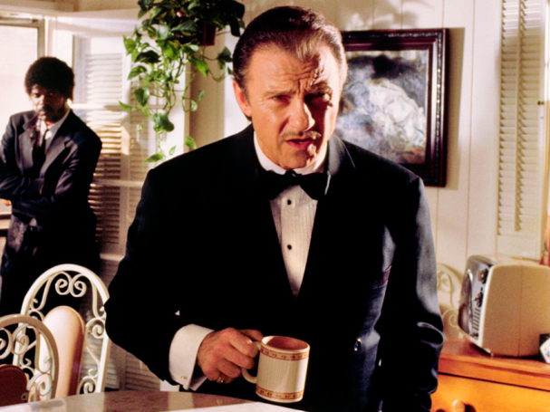 </td> </tr> <tr> <td> Ving Rhames </td> <td> Uma Thurman </td> <td> Harvey Keitel </td> </tr> </table> --- # Key crew members <table style="width: 100%"> <tr> <td colspan="3"> </td> <td colspan="3"> 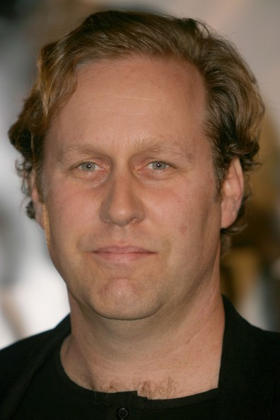 </td> </tr> <tr> <td colspan="3"> Quentin Tarantino </td> <td colspan="3"> Roger Avary </td> </tr> <tr> <td colspan="2"> <img src="lbender.jpg"style="width: 130px"/> </td> <td colspan="2"> </td> <td colspan="2"> </td> </tr> <tr> <td colspan="2"> Lawrence Bender </td> <td colspan="2"> Andzrej Sekula </td> <td colspan="2"> Sally Menke </td> </tr> </table> --- # Budget Budget of $8.5 million. Grossed $213.9 million. One of the highest-grossing independent movies. --- # Reviews <p> <span class="important">Excellent rating</span> (over 90% on rottentomatoes).<br /> Excess of violence disappointed some critics.<br /> </p> -- <p> <div class="critic"> "Everyone was trying to do irony and incorrectness, but without his brilliance it just looked smug." <div style="font-style: italic; text-align: right">(The Guardian)</div><br /> </p> -- <p> <div class="critic"> "Some sequences, [...] have the uncomfortable feeling of creative desperation, of someone who is afraid of losing his reputation scrambling for any way to offend sensibilities."</div> <div style="font-style: italic; text-align: right">(Los Angeles Times)</div><br /></p> --- # Awards <span class="important">26 nominations</span> -- <span class="important">8 awards</span> -- * Academy Awards - Best Original Screenplay (Quentin Tarantino and Roger Avary) * BAFTA Awards - Best Supporting Actor (Samuel L. Jackson) - Best Original Screenplay (Quentin Tarantino and Roger Avary) * Cannes Film Festival - Palme d'Or * Golden Globe Awards - Best Screenplay (Quentin Tarantino) * National Society of Film Critics - Best Film - Best Director (Quentin Tarantino) - Best Screenplay (Quentin Tarantino and Roger Avary) --- # The breakfast <video width="320" height="240" controls> <source src="/home/tom/Vidéos/Pulp_fiction/breakfast.mp4" type="video/mp4"> <!-- <source src="movie.ogg" type="video/ogg"> --> Your browser does not support the video tag. </video> --- # Marvin <video width="320" height="240" controls> <source src="/home/tom/Vidéos/Pulp_fiction/marvin.mp4" type="video/mp4"> <!-- <source src="movie.ogg" type="video/ogg"> --> Your browser does not support the video tag. </video> --- background-image: url(wallls.com-41814.jpg) # Conclusion <table style="width: 100%; font-size: 35px; margin-top: 150px; margin-bottom: 150px; line-height: 60px;"> <tr> <td>Valentin:</td> <td><span class="important">Good but surprising.</span></td> </tr> <tr> <td>Tom:</td> <td><span class="important">Great movie.</span></td> </tr> </table> -- <div style="text-align: center; font-size: 40px">Questions?</div>